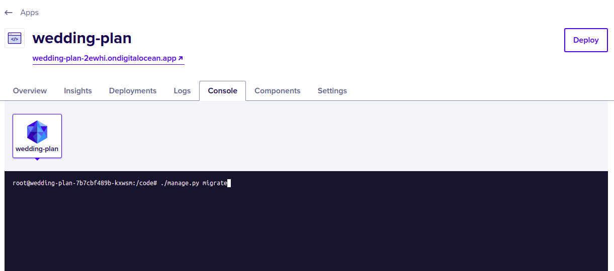

Digital Ocean#
Pegasus provides native support for Digital Ocean App Platform. To build for Digital Ocean, choose the “digital_ocean_app_platform” option when installing Pegasus. Then follow the steps below to deploy your app.
Prerequisites#
If you haven’t already, create your Digital Ocean account. You can sign up with this link to get $100 credit and help support Pegasus.
Next, install and configure the doctl command line tool by following these instructions.
Additionally, you must connect Digital Ocean to your project’s Github repository. This can be done from inside App Platform, or by following this link.
Deploying#
Once you’ve configured the prerequisites, deploying is just a few steps.
If you are planning to use Celery or Redis, first create your Redis cluster.
In the command below, replace <your-project> with the values from deploy/app-spec.yaml.
doctl databases create <your-project>-redis --engine redis --num-nodes 1 --version 7
Next edit the /deploy/app-spec.yaml file. In particular, make sure to set your Github repository and branch.
If you aren’t using Celery, you can remove the sections related to redis, and the celery-worker.
Finally, run doctl apps create --spec deploy/app-spec.yaml
That’s it! In a few minutes your app should be online. You can find and view it here.
After deploying, review the production checklist for a list of common next steps
Settings and Secrets#
App platform builds use the settings_production.py file.
You can add settings here, and use environment variables to manage any secrets, following the pattern used
throughout the file.
Environment variables can be managed in the Digital Ocean dashboard as described here.
Running One-Off Commands#
The easiest way to run once-off commands in your app is to click the “console” tab in app platform and just type in the command. See the screenshot below for what it looks like:

You may also need to run additional commands to get up and running, e.g. ./manage.py bootstrap_subscriptions
for initializing your Stripe plan data.
Celery Support#
Celery should work out-of-the box.
If you have issues running celery, ensure that you have created a Redis database, and that the values for the
REDIS_URL environment variables match the name you’ve chosen.
If you need to run celerybeat (for scheduled/periodic tasks), you’ll have to add a second worker to your
app-spec.yaml file. You can copy and paste the configuration for the celery worker, but replace
the run_command with the following line (swapping in your app name for your_app):
celery -A your_app beat -l INFO
Note that simply adding --beat or -B to the existing Celery worker does not work on app platform.